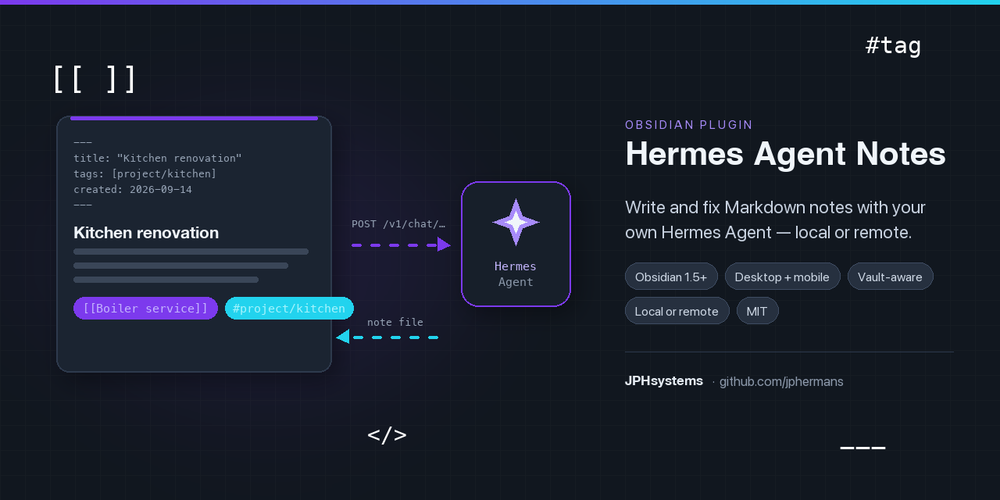

Hermes Agent Notes — setup for every instance
One page for every way to reach a Hermes instance: the same machine, your own network, Tailscale, Cloudflare Tunnel, ngrok, a TLS proxy, a dedicated profile, or Hermes running on the phone itself. Pick your row in the table, follow that section, then run the verify checklist.

The plugin does all the file work
Hermes never needs access to your vault. The plugin sends the request and the notes context, receives Markdown, and writes the file itself — through Obsidian's own APIs, with your approval. Nothing in this guide gives Hermes a path into your vault.
Quick start
- Enable the API server on the machine that runs Hermes (section 1).
- Make it reachable from the device running Obsidian (pick your row).
- Install the plugin with BRAT: Community plugins → BRAT → Add a beta plugin →
jphermans/hermes-obsidian, then enable Hermes Agent Notes. - Settings → Hermes Agent Notes: paste the URL, the API key, and anything your route needs (a profile prefix, or extra headers).
- Press Test connection. Then Open chat panel and ask for a note.
What happens when you ask
Choose your instance
| Where Hermes runs | Where Obsidian runs | Route | Phones? | URL shape |
|---|---|---|---|---|
| Same computer | Same computer | Loopback | no | http://127.0.0.1:8642 |
| A machine at home | Another device on the same Wi-Fi/LAN | LAN over HTTP | no | http://192.168.1.50:8642 |
| A machine you own | Phone, tablet, laptop, anywhere | Tailscale easiest | yes | https://host.tailnet.ts.net |
| A machine you own | Your own devices, no third party involved | WireGuard self-hosted | desktop as-is; phones with TLS | http://10.8.0.1:8642 |
| A machine you own | Anywhere, plus a public hostname you control | Cloudflare Tunnel + Access | yes | https://hermes.example.com |
| A machine you own | Anywhere, quickest to stand up | ngrok static domain | yes | https://name.ngrok.app |
| A VPS / server with a domain | Anywhere | TLS reverse proxy | yes | https://hermes.example.com |
| The phone itself (Android/Termux) | The same phone | Loopback on that device | that phone only | http://127.0.0.1:8642 |
| Any of the above | Any of the above | A dedicated Hermes profile | yes | same URL, plus a prefix or port |
A rule that explains the whole table: iOS and Android refuse plain HTTP to any host but the device itself (App Transport Security / network security config). So HTTPS is what makes a phone work — and a route already serving HTTPS on 443 needs no port in the URL.
1 · Enable the API server on the Hermes host
On the machine that runs Hermes, put these in ~/.hermes/.env (the enable flag and the key are environment variables — not config.yaml keys):
API_SERVER_ENABLED=true
API_SERVER_KEY=my-secret-key # a value you invent; the plugin sends it as Bearer
# API_SERVER_HOST defaults to 127.0.0.1 — this device only.
# Set it (0.0.0.0 for the LAN, or a VPN address) when another device
# has to reach the API server. A tunnel or proxy needs nothing here.Then restart the gateway and check it answers on loopback:
hermes gateway install && hermes gateway start # run as a service, not a terminal
hermes gateway status
curl -s http://127.0.0.1:8642/health
curl -s -H "Authorization: Bearer my-secret-key" http://127.0.0.1:8642/v1/modelsThe key is not issued by Hermes — you invent it, store it in the host's .env, and paste the same string into the plugin. It is unrelated to your LLM provider keys (OpenRouter, Nous, Anthropic…), which the plugin never sees. If the API server runs under a named profile, its .env is ~/.hermes/profiles/<name>/.env.
2 · Same machine (loopback)
The simplest case: Obsidian and Hermes on one computer.
http://127.0.0.1:8642the value from
.envempty
none
Desktop only. On a phone, 127.0.0.1 means the phone itself, so the plugin refuses to save that URL on mobile unless you explicitly choose Save anyway. See section 9 for the one legitimate exception.
3 · Another device on the same network (LAN)
Works on desktop; a phone will refuse it (plain HTTP to another machine).
# on the Hermes host, only if you accept that anyone on the LAN can reach it
API_SERVER_HOST=0.0.0.0
# restart the gateway, find the address
ipconfig getifaddr en0 # macOS → 192.168.1.50
hostname -I | awk '{print $1}' # Linuxhttp://192.168.1.50:8642the value from
.envBinding to 0.0.0.0 exposes a full agent with terminal access to your whole network. Prefer Tailscale: it keeps the server on loopback and gives every device an HTTPS address.
4 · Tailscale — the easiest route for phones
Install Tailscale on the Hermes host and on each device, sign both into the same tailnet, then let Tailscale serve HTTPS:
tailscale serve --bg 8642 # HTTPS on your tailnet, nothing public
tailscale serve statusIt prints an address like https://your-machine.your-tailnet.ts.net. That is your API server URL — no port needed, because Tailscale terminates TLS on 443 for you.
https://your-machine.your-tailnet.ts.netthe value from
.envThe API server itself stays on 127.0.0.1: only your tailnet can reach it, and the plugin works identically on desktop, iPhone, iPad and Android.
4b · WireGuard — your own VPN, no third party
Tailscale is WireGuard with the coordination, key exchange and certificates handled for you. If you would rather run the tunnel yourself — no account, no vendor in the path, nothing to sign up for — install WireGuard on the Hermes host and connect your devices to it. Only one UDP port needs to be open, and the API server answers on its private VPN address.
Install — every system
| System | Install | Notes |
|---|---|---|
| Debian · Ubuntu · Mint (host) | sudo apt install wireguard | The kernel module ships with modern kernels; the package adds wg and wg-quick. |
| RHEL · CentOS · Fedora (host) | sudo dnf install wireguard-tools | On very old kernels you also need the DKMS module. |
| Arch · Manjaro (host) | sudo pacman -S wireguard-tools | |
| Alpine (host) | sudo apk add wireguard-tools | Common on routers and tiny VPS images. |
| macOS (host) | WireGuard from the App Store, or brew install wireguard-tools | The app is the easier path on a desktop; wg-quick is for a headless Mac. |
| Windows (host) | Installer from wireguard.com/install | Import the config in the app; it also installs a service so the tunnel survives a reboot. |
| Clients — phone, tablet, laptop | Official apps: App Store (iOS/iPadOS/macOS), Play Store or F-Droid (Android), wireguard.com/install (Windows/Linux/BSD) | Each device needs its own key pair — never copy one device's private key to another. |
Keys, then two config files
# on the Hermes host — one key pair for the server
wg genkey | sudo tee /etc/wireguard/server.key | wg pubkey | sudo tee /etc/wireguard/server.pub
# and one per device, generated wherever is convenient (or by the app itself)
wg genkey | tee phone.key | wg pubkey > phone.pub# /etc/wireguard/wg0.conf — the host
[Interface]
Address = 10.8.0.1/24
ListenPort = 51820
PrivateKey = <contents of server.key>
[Peer] # one block per device
PublicKey = <contents of phone.pub>
AllowedIPs = 10.8.0.2/32 # just this device — keep it tight# the device's own config (import it in the app, or ~/wg0.conf + wg-quick up wg0)
[Interface]
Address = 10.8.0.2/32
PrivateKey = <contents of phone.key>
DNS = 1.1.1.1 # optional; omit to keep the device's own DNS
[Peer]
PublicKey = <contents of server.pub>
Endpoint = your-host.example.com:51820 # public address of the host
AllowedIPs = 10.8.0.0/24 # only the VPN subnet, not 0.0.0.0/0
PersistentKeepalive = 25 # keeps the NAT hole openBring it up, then point the API server at it
# on the host
sudo wg-quick up wg0
sudo systemctl enable wg-quick@wg0 # survive a reboot
sudo ufw allow 51820/udp # or your firewall's equivalent — this is the only port
wg show # peers, handshakes, transfer
# the API server must listen on the VPN address, not only loopback,
# or the tunnel cannot reach it. ~/.hermes/.env:
# API_SERVER_HOST=10.8.0.1
hermes gateway stop && hermes gateway
# from a connected device
curl -s http://10.8.0.1:8642/healthhttp://10.8.0.1:8642 — the host's VPN addressnone — there is no proxy in the path
A phone still needs HTTPS. The VPN removes the exposure, not the operating system's rule: iOS and Android refuse plain HTTP to a non-loopback address even over a VPN. So this route gives you desktop immediately, and for phones either put TLS on top (Caddy on the host with a DNS-01 certificate — no ports opened) or use Tailscale, which does exactly that for you. That is the whole difference between the two: same protocol, one has the certificates done.
CGNAT blocks it. If your ISP does not give you a reachable public address (common on mobile and some fibre plans), an inbound WireGuard endpoint will never work — that is the case where Tailscale or Cloudflare Tunnel is the answer instead of a port forward.
What you are trusting. WireGuard has no accounts and no reset: the private key is the identity, so treat those files like passwords and keep them off shared machines. The tunnel reaches the whole host, not just the API server, so keep AllowedIPs narrow, open only UDP 51820, and if you want a device to reach nothing else, firewall the VPN interface on the host to port 8642 alone.
5 · Cloudflare Tunnel (named) + Access
Gives you a permanent public HTTPS hostname without opening a port. Needs a domain on Cloudflare (the free plan is enough).
Install cloudflared — every system
| System | Install | Notes |
|---|---|---|
| macOS | brew install cloudflared |
Or download the darwin arm64 / amd64 .tgz and put the binary on your PATH. |
| Windows easiest | winget install --id Cloudflare.cloudflared -e |
Then reopen the terminal so cloudflared is on PATH. PowerShell or CMD — no admin needed for the install itself. |
| Windows (no winget, or you want the installer) | Download cloudflared-windows-amd64.msi and run it |
The zip-free alternative is the .exe: copy it to C:\Cloudflared\bin\, rename it to cloudflared.exe, and call it by full path (C:\Cloudflared\bin\cloudflared.exe) instead of relying on PATH. |
| Debian · Ubuntu · Mint |
sudo mkdir -p --mode=0755 /usr/share/keyringscurl -fsSL https://pkg.cloudflare.com/cloudflare-main.gpg | sudo tee /usr/share/keyrings/cloudflare-main.gpg >/dev/nullecho "deb [signed-by=/usr/share/keyrings/cloudflare-main.gpg] https://pkg.cloudflare.com/cloudflared any main" | sudo tee /etc/apt/sources.list.d/cloudflared.listsudo apt-get update && sudo apt-get install cloudflared
|
Straight from Cloudflare's package repository, so later updates come with a normal apt upgrade. |
| RHEL · CentOS · Fedora |
curl -fsSl https://pkg.cloudflare.com/cloudflared.repo | sudo tee /etc/yum.repos.d/cloudflared.reposudo yum update && sudo yum install cloudflared
|
Use dnf in place of yum on modern Fedora/RHEL. |
| Arch · Manjaro | sudo pacman -Syu cloudflared |
From the official repositories — no AUR package needed. |
| Docker / NAS | docker run cloudflare/cloudflared:latest tunnel --no-autoupdate run --token <token> |
Only for a remotely-managed tunnel created in the dashboard; use the token the dashboard gives you. Locally-managed tunnels need the .json credentials file mounted in. |
| Any other Linux | Direct binaries: amd64 · 386 · arm · arm64 — plus .deb and .rpm builds |
chmod +x cloudflared && sudo mv cloudflared /usr/local/bin/ |
Cloudflare's own advice: if you create the tunnel in the dashboard, copy the install command it shows you — it is already correct for the machine you are on.
Create the tunnel (same on every system)
cloudflared tunnel login # browser: authorise the zone
cloudflared tunnel create hermes # note the UUID it prints
cloudflared tunnel route dns hermes hermes.example.comOn Windows the config and credentials live in %USERPROFILE%\.cloudflared\ and the binary may need its full path (C:\Cloudflared\bin\cloudflared.exe). The configuration file below is otherwise identical, with Windows paths:
# Windows equivalent of the config.yml below
tunnel: 7b9c1f38-2f4c-4a2e-9c11-3f0a5b6d7e80
credentials-file: C:\Users\you\.cloudflared\7b9c1f38-2f4c-4a2e-9c11-3f0a5b6d7e80.json
ingress:
- hostname: hermes.example.com
service: http://127.0.0.1:8642
- service: http_status:404
logfile: C:\Cloudflared\cloudflared.logConfiguration file
~/.cloudflared/config.yml (macOS/Linux) — replace the UUID with the one you were given:
tunnel: 7b9c1f38-2f4c-4a2e-9c11-3f0a5b6d7e80
credentials-file: /Users/you/.cloudflared/7b9c1f38-2f4c-4a2e-9c11-3f0a5b6d7e80.json
ingress:
- hostname: hermes.example.com
service: http://127.0.0.1:8642
- service: http_status:404Check the routing rules before you rely on them: cloudflared tunnel ingress validate.
Run it as a service — per system
# First, check it works (Ctrl-C when the hostname answers, on any system)
cloudflared tunnel run hermes
# ── macOS ────────────────────────────────────────────────────────────
cloudflared service install # launch agent: starts at login
sudo cloudflared service install # launch daemon: starts at boot
sudo launchctl start com.cloudflare.cloudflared
# logs: /Library/Logs/com.cloudflare.cloudflared.{out,err}.log
# ── Linux (systemd) ─────────────────────────────────────────────────
sudo cloudflared service install
# sudo points $HOME at /root, so if the config was created in your own
# home, pass it explicitly or the service cannot find it:
sudo cloudflared --config /home/<USER>/.cloudflared/config.yml service install
sudo systemctl start cloudflared
systemctl status cloudflared # restart after config changes
# ── Windows ─────────────────────────────────────────────────────────
# A service runs as the SYSTEM account, which has a different home folder:
cloudflared.exe service install
mkdir C:\Windows\System32\config\systemprofile\.cloudflared
copy C:\Users\%USERNAME%\.cloudflared\cert.pem C:\Windows\System32\config\systemprofile\.cloudflared\
copy C:\Users\%USERNAME%\.cloudflared\<Tunnel-ID>.json C:\Windows\System32\config\systemprofile\.cloudflared\
# put config.yml there too, then point the service at it — as admin, in the
# Registry Editor, set ImagePath under
# HKEY_LOCAL_MACHINE\SYSTEM\CurrentControlSet\Services\Cloudflared
# to: C:\Cloudflared\bin\cloudflared.exe --config=C:\Windows\System32\config\systemprofile\.cloudflared\config.yml tunnel run
sc start cloudflared # sc stop / sc start to reload configThe Windows path is the fiddly one because the service identity, not you, reads the config. The shortcut: create the tunnel in the dashboard and use the token form (cloudflared.exe service install <token>), which keeps the whole configuration on Cloudflare's side — nothing to copy into systemprofile.
Status and proof it is up
cloudflared tunnel info hermes # status and live connections
cloudflared tunnel list
curl -sS https://hermes.example.com/health # from another network, ideallyPrefer the dashboard? Networking → Tunnels → Create a tunnel → Published application does the same and the connector it hands you also runs as a service.
Lock it down with Access + a service token
- Zero Trust → Access controls → Service credentials → Service Tokens → Create Service Token. Set a duration (a year is typical) — Cloudflare can alert you a week before it expires.
- Create an Access application for
hermes.example.comwith a policy whose action is Service Auth. a plain Allow policy will fail — it keeps asking for an identity-provider login, which a non-browser client cannot do. - Copy the two headers it shows you into the plugin's Extra request headers:
CF-Access-Client-Id: 88bf3b6d86161464f6509f7219099e57.access
CF-Access-Client-Secret: bdd31cbc4dec990953e39163fbbb194c93313ca9f0a6e420346af9d326b1d2a5https://hermes.example.comthe value from
.envthe two
CF-Access-* linesIf you see HTTP 403 with Access in front, the service-token headers are missing or the policy is not Service Auth. If the hostname is public with no Access app, anyone who guesses it can drive an agent with terminal access — always put Access in front.
6 · ngrok with a static domain
Fastest public HTTPS URL. Claim the static domain your account includes — that is what makes it permanent instead of a new random URL on every restart.
Install the ngrok agent — every system
| System | Install | Notes |
|---|---|---|
| macOS | brew install ngrok | or the standalone macOS download from ngrok.com/download |
| Windows | winget install ngrok -s msstore | Microsoft Store build. Also available: scoop install ngrok and choco install ngrok (ngrok publishes the Chocolatey package itself). |
| Debian · Ubuntu | curl -sSL https://ngrok-agent.s3.amazonaws.com/ngrok.asc | sudo tee /etc/apt/trusted.gpg.d/ngrok.asc >/dev/nullecho "deb https://ngrok-agent.s3.amazonaws.com bookworm main" | sudo tee /etc/apt/sources.list.d/ngrok.listsudo apt update && sudo apt install ngrok | Substitute your release codename for bookworm if you are on another Debian/Ubuntu version. |
| Any Linux (snap) | sudo snap install ngrok | Simplest on a server you do not want to add a repo to. |
| Any Linux / FreeBSD / Raspberry Pi | Standalone binary from ngrok.com/download | sudo tar -xvzf ~/Downloads/ngrok-v3-stable-linux-amd64.tgz -C /usr/local/bin |
| Docker / NAS | docker run --net=host -v ~/.config/ngrok/ngrok.yml:/etc/ngrok.yml ngrok/ngrok:latest start --all --config /etc/ngrok.yml | Keeps the agent next to the tunnel config; use -p 8642:8642 style networking if you prefer not to use host mode. |
ngrok config add-authtoken <your-authtoken> # dashboard.ngrok.com → Your AuthtokenThen the agent config file — ~/Library/Application Support/ngrok/ngrok.yml on macOS, ~/.config/ngrok/ngrok.yml on Linux, %LOCALAPPDATA%\ngrok\ngrok.yml on Windows. Run ngrok config edit to open it (or ngrok config check to see where it expects it) instead of guessing. Agent v3 — tunnels: is deprecated:
version: 3
agent:
authtoken: <your-authtoken>
endpoints:
- name: hermes
url: https://your-name.ngrok.app
upstream:
url: 8642ngrok config check && ngrok start hermes # test it
ngrok service install --config "$HOME/Library/Application Support/ngrok/ngrok.yml"
ngrok service start # now it survives rebootshttps://your-name.ngrok.appngrok-skip-browser-warning: trueTwo ngrok traps. The free tier shows an interstitial page to browsers; the plugin skips it with the header above. ngrok does not let you add that header through traffic policy on a free account, so it has to come from the client — that is why it belongs in the plugin's extra headers.
And never use ngrok --basic-auth: it sends an Authorization header, which would replace your Hermes API key and produce a 401.
7 · Your own TLS reverse proxy (VPS or home server)
If the machine running Hermes has a domain pointed at it, Caddy gets a certificate automatically and proxies to the loopback API server:
# /etc/caddy/Caddyfile (or a Caddyfile next to the binary)
hermes.example.com {
reverse_proxy 127.0.0.1:8642
}nginx equivalent, including the line that matters for streaming:
server {
listen 443 ssl;
server_name hermes.example.com;
location / {
proxy_pass http://127.0.0.1:8642;
proxy_http_version 1.1;
proxy_set_header Host $host;
proxy_set_header X-Forwarded-For $proxy_add_x_forwarded_for;
proxy_buffering off; # without this, answers arrive in one piece
proxy_read_timeout 600s; # an agent turn can legitimately take minutes
}
}https://hermes.example.comthe value from
.envKeep the API server bound to 127.0.0.1 so the proxy is the only way in. If you add authentication at the proxy (X-Auth, basic auth on the proxy itself), put those headers in Extra request headers — but remember a header named Authorization replaces the plugin's own key.
8 · Give the vault its own Hermes profile
By default the plugin talks to your main profile, so vault prompts and answers share the session store and long-term memory with everything else you do with Hermes. To keep vault work in one folder instead, use a profile — a profile is a separate directory:
~/.hermes/profiles/obsidian/
├── config.yaml # its own model, provider, toolsets
├── .env # its own API_SERVER_KEY (and API_SERVER_PORT)
├── SOUL.md # its own personality
├── memories/ # MEMORY.md / USER.md — nothing from your other agent
├── sessions/ # routing index
└── state.db # every prompt and answer that came from the vaulthermes profile create obsidian # creates the profile + an `obsidian` command
obsidian setup # its own model and provider keysMake a separate key for this profile — never reuse another profile's. A URL-selected profile authenticates with its own API_SERVER_KEY and nothing else, so the default profile's key (or any other profile's) always answers 401. Generate one with openssl rand -hex 24 — 48 characters, and at least 16 or the multiplex path rejects it as unusable — put it in the profile's own .env below, restart the multiplexer, and paste the same value into the plugin.
Enable its API server in that profile's .env:
API_SERVER_ENABLED=true
API_SERVER_KEY=my-vault-key
API_SERVER_PORT=8643 # two profiles that both leave this unset collide on 8642
API_SERVER_HOST=127.0.0.1 # default, this device only — 0.0.0.0 or a VPN address to reach it remotelyobsidian gateway startCreate the profile first — it is a host-side thing. The plugin only sends HTTP requests: it cannot create a profile and cannot check whether one exists. Until the profile exists and its API server is listening you will see 404 (wrong port, or a prefix for a profile nobody serves) or 401 (a key belonging to another profile). You do not have to do this before installing the plugin — start on the default profile and switch later, because the connection is only settings. No shell handy? The Hermes dashboard and desktop app both have a Profiles page that creates, activates and deletes profiles.
Two ways to point the plugin at it
| How | Plugin settings | |
|---|---|---|
| Its own port simplest | The profile's gateway listens on 8643 | URL http://<host>:8643, key = that profile's key, prefix empty |
| One gateway, many profiles | On the default profile: hermes config set gateway.multiplex_profiles true then hermes gateway restart. A secondary profile must not run its own gateway in this mode | URL unchanged (:8642), profile prefix obsidian → requests go to /p/obsidian/v1 with that profile's key |
What you get: separate sessions and memory, its own SOUL.md, its own key you can rotate alone — and /v1/models starts advertising the profile name, which is how you confirm the routing took effect (it shows up in the plugin's model dropdown). Save the live connection once under Saved setup so you can return to it after experimenting — there is deliberately only one saved setup, so nothing can be ambiguous about which connection is live.
A URL-selected profile only accepts a key of at least 16 characters. Hermes resolves a named profile's key with has_usable_secret(key, min_length=16) and treats a shorter one as unusable — so it computes an expected key of empty and answers 401 whatever the client sends, even when the .env and the plugin hold the same string. The default scope's guard is far more lenient, which is why this only shows up once a prefix is set. Generate one with openssl rand -hex 24, put it in that profile's .env, restart the multiplexer, and paste the same value into the plugin.
Finer control: each conversation already travels in its own lane — the plugin sends X-Hermes-Session-Id per conversation with a memory scope key of obsidian:<VaultName>:<sessionId>. Turning off Report the conversation to Hermes sessions writes nothing to the Hermes session store at all, at the cost of session history and background-delegation delivery.
9 · Hermes on the phone itself
The one case where loopback is legitimate on mobile: Hermes running on that same phone (Android with Termux, for example). The plugin warns by default because 127.0.0.1 normally means the phone.
- Run Hermes in Termux on the phone, with
API_SERVER_ENABLED=truein its.env. - In the plugin, enter
http://127.0.0.1:8642. The mobile guard blocks it — press Save anyway — Hermes runs on this device. - Test connection. Expect it to work while Termux keeps the gateway running; the phone must not be in deep sleep.
Anything more durable — a phone as the always-on host — is fragile. If you need it available from other devices too, run Hermes on a machine and reach it over Tailscale.
10 · Streaming (optional)
Live token-by-token output is a browser request, so the Hermes side needs an explicit origin allowlist. Only needed when Stream answers is on.
API_SERVER_CORS_ORIGINS=app://obsidian.md,capacitor://localhost,http://localhostDesktop presents app://obsidian.md, iOS capacitor://localhost, Android http://localhost — add the ones you actually use, restart the gateway, then press Verify streaming in the settings. Streaming is off by default because it fails without that line. A buffering proxy in front (nginx without proxy_buffering off, some tunnels) delivers the answer in one piece even when everything is configured correctly — the plugin labels which transport answered under each reply, so you can tell the difference.
11 · Keep it reachable
A permanent URL is only as permanent as the three layers behind it:
hermes gateway install && hermes gateway start # 1. the API server as a service
hermes gateway status # per profile: hermes -p obsidian gateway status
cloudflared service install # 2. the tunnel as a service
ngrok service install --config … && ngrok service start
sudo pmset -a sleep 0 # 3. the host must not sleep (macOS)
sudo loginctl enable-linger "$USER" # Linux: services survive logoutLaptops sleep, and a sleeping machine drops the tunnel: the plugin then reports a timeout, not a wrong URL. An always-on box (a mini PC, a NAS, a small VPS) is the reliable answer.
Verify checklist
Work outward from the server, so a failure tells you which layer is wrong:
- On the host:
curl -s http://127.0.0.1:8642/healthanswers. - On the host:
curl -s -H "Authorization: Bearer <key>" http://127.0.0.1:8642/v1/modelslistshermes-agent(or your profile's name). - From another device on the same network: the tunnel URL answers —
curl -sS https://hermes.example.com/health. - From mobile data (Wi-Fi off), on the phone: the same curl. This is the test that proves a phone will work — it is not the same as testing on the LAN.
- In the plugin: Test connection → the status card shows Connected with the model name and the round trip.
- In the plugin: Open chat panel → ask something trivial → an answer arrives, and the line under it says which transport ran.
- In the plugin: ask for a new note → the preview shows a rendered version, the Markdown, the file name and syntax checks → Create note writes it.
Troubleshooting
| Symptom | Cause and fix |
|---|---|
| Could not reach Hermes | Is the gateway running (hermes gateway status)? Is the host right and reachable from this device? Is the tunnel service up (cloudflared tunnel info hermes)? |
| 401 / rejected | The key does not match API_SERVER_KEY in that instance's .env. If you set a profile prefix, use that profile's key. |
| 403 behind Cloudflare | Access service-token headers missing, or the policy action is not Service Auth. |
| 404 | Wrong URL (a /v1 suffix in the field is a common one — the plugin adds paths itself), or a prefix naming a profile that is not being served, or a profile that does not exist yet. |
| 429 | Too many concurrent runs on the instance — retry, or raise gateway.platforms.api_server.max_concurrent_runs. |
| Timeout / the page seems frozen | The connection-check timeout (15 s by default) fired: the address is wrong or the host is asleep. Raise it if your instance is just slow. |
| Phone fails while desktop works | Plain HTTP to another machine — mobile refuses it. Move to HTTPS (Tailscale, Cloudflare, ngrok, a TLS proxy). |
| URL changes every restart | That is a quick tunnel. Use a named Cloudflare tunnel and its hostname, or ngrok's static domain (5, 6). |
| Tokens never appear one by one | Streaming off (default), missing CORS origin line, or a buffering proxy. Press Verify streaming — it names the cause. |
| Notes do not match my style | Run Show detected vault conventions, raise Notes to analyse, rescan. |
| Something failed on the phone (no console) | Settings → Hermes Agent Notes → Diagnostics → Show recent errors, with Copy all. The same text is in <vault>/.obsidian/plugins/hermes-agent-notes/errors.log. |
Security
- The key protects a full agent with terminal and file access on that machine. Treat it like an SSH key: keep it in
.envon the host (mode 600), never in a note, and rotate it if it leaks. - Prefer an overlay or Access over a bare port. Tailscale or Cloudflare Access in front of a tunnel beats opening 8642 to the internet.
- Keep the API server on
127.0.0.1and let the tunnel or proxy be the only way in. - A header named
Authorizationin Extra request headers replaces the plugin's bearer key — that is how an authenticating proxy works, and whyngrok --basic-authmust be avoided. - Rotate the Access service token before it expires (Cloudflare can alert you a week ahead).
Privacy & backups
- Your vault never leaves the machine unless you send it: the plugin puts the note text it was asked about into the request. Vault conventions (property names, tag style, link style) are summarised and sent as context.
- With Report the conversation to Hermes sessions on, each conversation becomes a Hermes session in that profile's
state.db— visible withhermes sessionsand session search. Switch it off and nothing is written server-side. - The plugin's own settings file and its export contain the API key and any extra headers in plain text, and a vault is usually synced. Keep those files private.
- Chat history lives in
<vault>/.obsidian/plugins/hermes-agent-notes/history.json(30 sessions, newest kept) and can be searched or cleared from the panel's 🕘 button.
Appendix: defaults at a glance
The values the plugin ships with, so you know what you are changing when you change one. Everything on this page that mentions a limit is one of these.
Three defaults that surprise people, all changeable under Conversation: streaming is off (it needs a CORS line on the server), caveat stripping is on (the assistant's “let me know if you'd like more…” never reaches a note), and session reporting is on (each conversation becomes a Hermes session — turn that off and nothing is stored server-side).
Appendix: what goes in each field
| Field | What it is | Typical value |
|---|---|---|
| API server URL | Root of the instance — no /v1 suffix. The port is optional: a tunnel on 443 needs none. Without a scheme, a public hostname becomes https, a LAN or loopback address stays http. | http://127.0.0.1:8642https://hermes.example.com |
| API key | The value you invented and put in that instance's .env as API_SERVER_KEY. | any strong string |
| Profile prefix | Only with gateway.multiplex_profiles on the default profile. Requests go to /p/<name>/v1. | obsidian or empty |
| Extra request headers | One Name: value per line. Cloudflare Access tokens, an authenticating proxy, ngrok's interstitial skip. | CF-Access-Client-Id: … |
| Model | What the instance advertises. /v1/models returns one name — hermes-agent, or the profile's name. | hermes-agent |
| Provider override | Only needed if you want a specific provider on the Hermes side; otherwise the instance uses its own default. | empty |
| How do you reach Hermes? | A picker that fills in the URL template, the headers a route needs, and a Test this route button for each scenario on this page. | — |
Appendix: mobile specifics
- Loopback URLs cannot be saved on mobile without the explicit Save anyway confirmation.
- Plain HTTP to any other machine is refused by the OS — use HTTPS.
- Text inputs are 16 px so iOS does not zoom the page when you tap the field; buttons are ≥ 44 px tap targets.
- Streaming works on mobile too (it is a browser request), but the same CORS line and the same proxy caveats apply.
- Long answers and big notes are fine, but a phone kills background activity: keep Obsidian in the foreground while a long turn runs, or press Stop and retry on desktop.
Found a gap in this guide? Open an issue on jphermans/hermes-obsidian with the version from the badge at the top of the plugin's settings page, the route you used, and the error text from Diagnostics → Show recent errors. The same guide ships inside the plugin: Settings → Hermes Agent Notes → Setup guide.